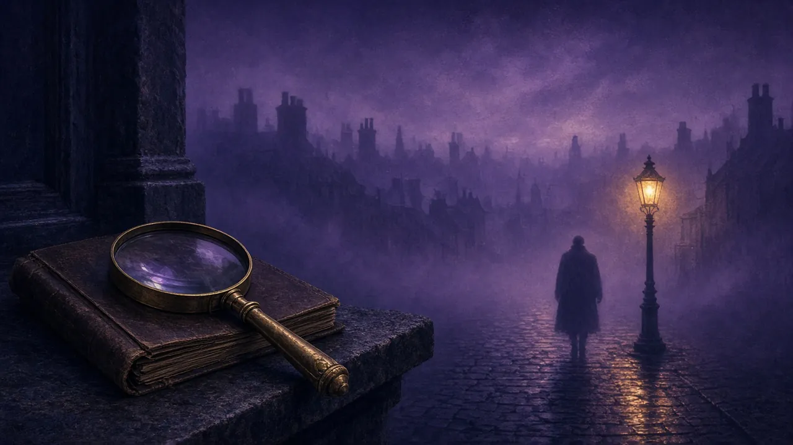
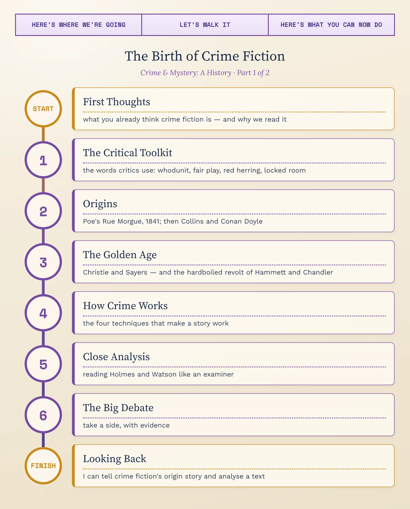
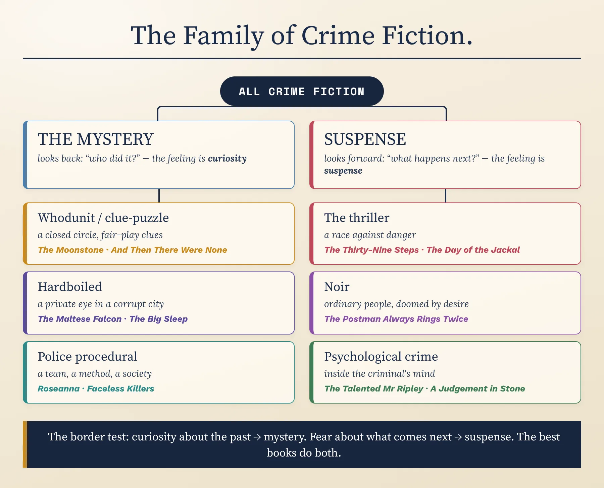
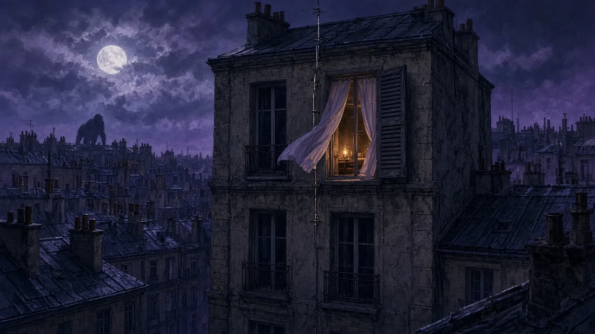
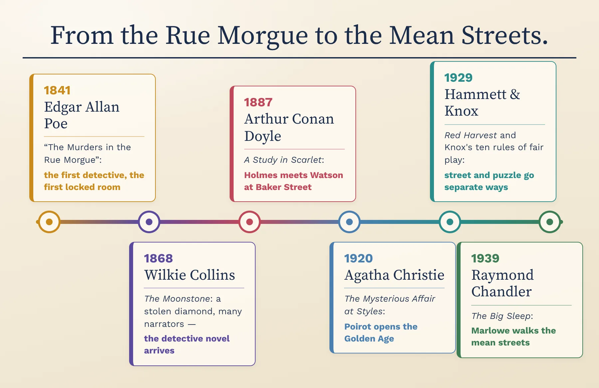
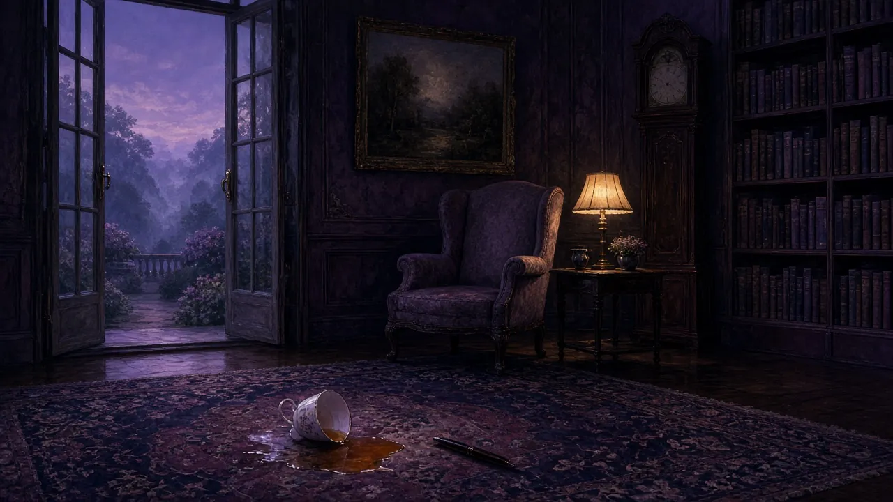
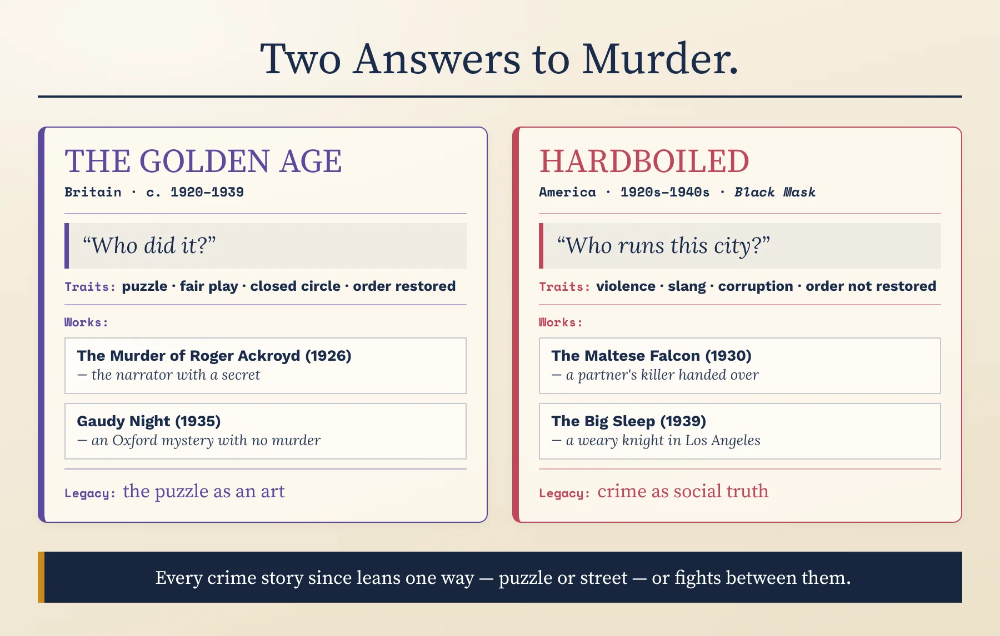
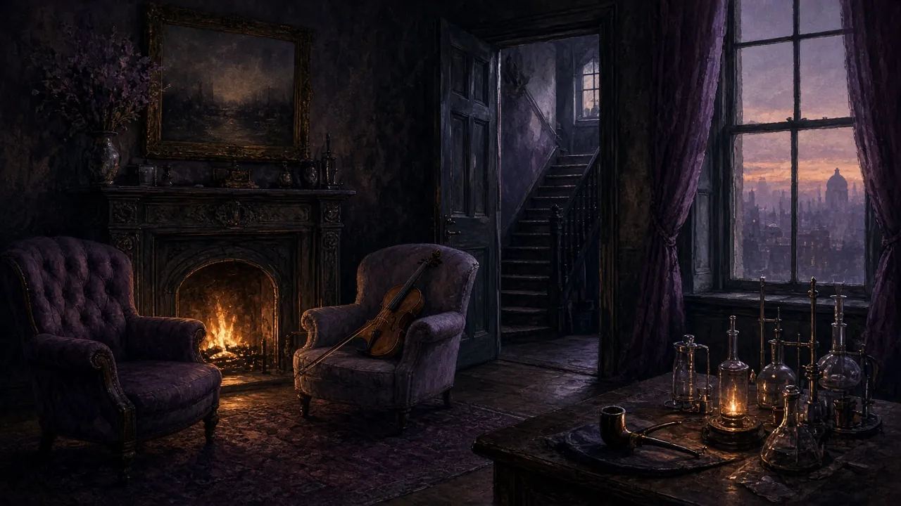
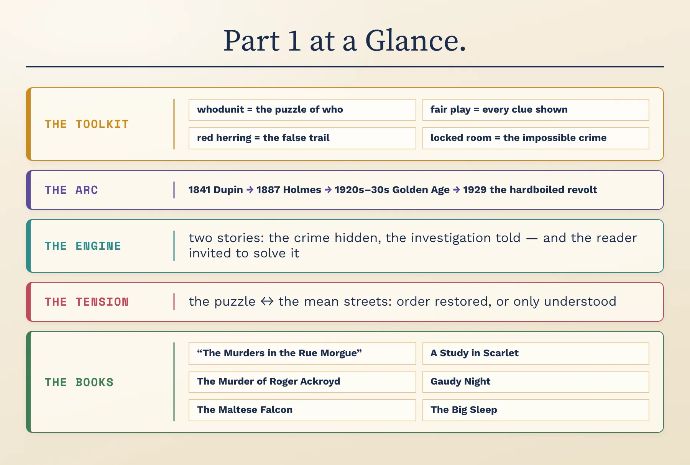

Origins & How It Works · C1/C2 · Speaking, Analysis & Discussion

Crime fiction is the best-selling kind of fiction there is, and it is often treated as a guilty pleasure: a body in the library, a clever detective, a twist on the last page. Yet underneath the puzzle it asks some of the oldest questions literature knows — what makes a person kill, whether reason can explain evil, and whether justice is ever really done. Over these two lessons we'll trace how it grew from a handful of stories by one troubled American poet into a global literature — and, just as importantly, examine how it is built.
Before we begin — think aloud, no notes. There are no wrong answers yet:
When you hear “detective story,” what three images come into your head first? Where do you think those images came from?
Think of a crime story you have read or watched and really enjoyed — a book, a film, a series, a podcast. What kept you hooked: wanting to know who, wanting to know why, or wanting to know what happens next?
Gut instinct, before we study anything: is crime fiction mainly a game, or can it be serious literature? By the end of today you'll answer this again with evidence.
To discuss crime fiction at an advanced level you need metalanguage — precise critical terms for what a text is doing. First, the biggest map of all: the family of crime fiction, and the one question that splits it in two.
The critic Tzvetan Todorov pointed out, in a famous 1966 essay, that a classic detective novel contains two stories: the story of the crime, which is over before the book begins, and the story of the investigation, which slowly reconstructs it. The reader's main feeling is curiosity — we travel backwards, from the body to the cause. In a thriller the two stories merge: the danger is still happening, and the main feeling is suspense — we travel forwards, wondering what will happen next.
Apply the test. Is a story in which we watch the killer plan the murder from page one still a “mystery”? And a series where the detective solves a different case each week, but the real story is the detective's own broken life — is that crime fiction, or a character drama in disguise? Defend a placement for each.

The map splits crime fiction into the stories that look back (who did it?) and the stories that look forward (what happens next?), with their branches underneath. Put three crime stories you know onto it. Then take one hard case — a film where you know the killer from the start, perhaps — and argue where it truly belongs, using Todorov's test: is your main feeling curiosity or suspense?
Four terms run through everything that follows — they are the names critics and writers use for what classic crime fiction actually does.
The word is a joke in American slang (“who done it?”) that became the standard name for the classic mystery. Its shape is almost fixed: a crime, usually murder; a closed circle of suspects, each with a motive and a secret; a detective who notices what others miss; and a final scene in which the solution is revealed and explained.
What makes it a puzzle rather than just a story is that the answer is already there, hidden in plain sight. The pleasure is not only in being surprised but in looking back and realising you could have seen it.
By the late 1920s, writers treated the detective story as a contest between author and reader, and contests need rules. The most famous set came in 1929 from the English priest and crime writer Ronald Knox, who published ten mock-serious “commandments”: no supernatural solutions, no more than one secret passage, no undiscovered poisons, no lucky accidents for the detective — and the detective must reveal every clue he finds.
Some American writers went further: in the Ellery Queen novels, the authors stop the story near the end with a “Challenge to the Reader” — you now have every clue; can you name the killer?
Try it as a test: if the detective solves the case with a fact we were never told, the writer has cheated, however clever the ending feels.
A red herring is a strong-smelling smoked fish, and the phrase came to mean anything that distracts from the real point. In crime fiction it is the writer's main tool of misdirection: the suspicious stranger, the bloodstained glove, the obvious suspect with no alibi.
The craft lies in balance. A good red herring must be believable enough to fool us, and explained by the end — a clue that simply disappears feels like cheating. The best writers hide the real clue inside the misdirection, so that we look straight at it and dismiss it.
A body is found in a room locked from the inside; the windows are fastened; no one could have got in or out. The locked-room or “impossible crime” mystery is the purest form of the puzzle, because the question is not only who but how.
It is as old as the genre itself: the very first detective story, Poe's “The Murders in the Rue Morgue” (1841), is a locked-room mystery. Its unwritten rule is that the solution must be rational — a ghost is never the answer.
Take any crime film, book or series you know — even vaguely. Tell me: is it a whodunit, or something else? Does it play fair? What was its best red herring? (If nothing comes to mind, use the board game Cluedo: a body, six suspects, a set of rooms and weapons — start there.)
Crime has always been in stories — Cain and Abel, Oedipus, Macbeth. But the detective story, in which the hero's job is to solve a crime by reasoning, has a birthday most critics agree on: April 1841. Here is that beginning, and the writers who turned it into a genre.
The writer: Edgar Allan Poe (1809–1849), the American poet of “The Raven” and master of the horror tale — poor, brilliant and often desperate — published “The Murders in the Rue Morgue” in Graham's Magazine in April 1841. He followed it with “The Mystery of Marie Rogêt” (1842–43) and “The Purloined Letter” (1844). He called them his “tales of ratiocination” — stories of reasoning.
What happens in the story: In Paris, a mother and daughter are horribly murdered in a fourth-floor apartment whose door is locked from the inside. Witnesses heard two voices — one French, and one shrill voice that each witness believes was speaking a different foreign language. The police are baffled. An eccentric young gentleman, C. Auguste Dupin, reads the newspaper reports, visits the scene, and notices what everyone else missed: a window that only seems fastened, a lightning rod outside it, a tuft of strange hair. His solution: the killer was not a person at all, but an orangutan that had escaped from a sailor.
Why it counts as the first: almost every element of the detective story is already here — the brilliant amateur detective, the admiring friend who narrates (the future Watson), the baffled police, the locked room, the clues hidden in plain sight, and the final scene in which the detective explains everything. Poe invented the form in one go.
Notice, too: the solution involves no human guilt at all. The first detective story is about the triumph of reason, not of justice — and that tension never leaves the genre.

So the founding text of detective fiction has a solution in which nobody is morally guilty. Knowing that — what would you say the genre was invented for: to catch criminals, or to show off the power of a reasoning mind? Which do you enjoy more in crime stories today?
For the next forty years, the detective grew up slowly — in France, in English sensation novels, and finally in one London sitting room.
Real police first: London's Metropolitan Police created a small detective department in 1842, and newspapers turned its officers into celebrities. Fiction followed: Charles Dickens gave Bleak House (1852–53) the shrewd Inspector Bucket.
The Moonstone (1868): Wilkie Collins's novel follows the theft of a sacred Indian diamond from an English country house. It is told by several narrators in turn, each seeing only part of the truth, and features the professional Sergeant Cuff — a detective who grows roses and is not always right. T. S. Eliot later called it “the first, the longest, and the best of modern English detective novels.”
In France: Émile Gaboriau's novels of the 1860s, from L'Affaire Lerouge (1866) to Monsieur Lecoq (1869), made a hero of the police detective Lecoq, who reads footprints and physical traces with almost scientific care.
Who he was: An Edinburgh-trained doctor with a slow practice and time to write. At medical school he had watched his teacher, the surgeon Joseph Bell, diagnose patients' jobs and histories from tiny details — and he gave that skill to his detective.
A Study in Scarlet (1887): Dr John Watson, an army doctor wounded in Afghanistan, needs cheap lodgings in London and is introduced to a strange young man who becomes his flatmate at 221B Baker Street: Sherlock Holmes, a “consulting detective” who amazes him at their first meeting by saying, “You have been in Afghanistan, I perceive.” A man is found dead in an empty house with the word RACHE written in blood on the wall; Holmes solves the case while Scotland Yard chases false leads. The second half of the novel leaps to America to tell the murderer's story of revenge.
The short stories: the novel sold modestly. What made Holmes a phenomenon was a series of short stories in the new Strand Magazine from 1891. Conan Doyle grew tired of him and killed him at the Reichenbach Falls in “The Final Problem” (1893); readers protested so strongly that he brought Holmes back, first in The Hound of the Baskervilles (1901–02) and then for good in 1903. In all, there are four novels and fifty-six short stories.
His method: Holmes calls it “the science of deduction” — reasoning from small observed facts (a tan line, a worn shoe, a callus) to a confident conclusion. Strictly, much of it is what logicians call inference or educated guessing, but on the page it feels like magic made rational.
You've now met both founding detectives. Both are brilliant, eccentric amateurs with an admiring friend who narrates. So why did Holmes become a global icon while Dupin remained a literary curiosity? Argue it aloud — then compare your view with a critic's.

The line runs from Poe in 1841 to Chandler in 1939. Cover it, and put these five in order from memory: A Study in Scarlet, The Moonstone, “The Murders in the Rue Morgue”, The Big Sleep, The Mysterious Affair at Styles. Then pick any two that sit next to each other and say how the later one answered or built on the earlier.
Between the two world wars, crime fiction split in two. In Britain it became an elegant puzzle played by gentlemen's rules; in America it moved into the gutter and the gangster's office. Both versions are still with us.
The Golden Age of detective fiction is the name usually given to the years between the wars, roughly 1920–1939, when the puzzle mystery was at its most popular and most inventive. Its typical setting is enclosed — a country house, a village, a train, an island — with a limited cast of suspects. Its detective is often an amateur or a private gentleman, and its ending restores order: the killer is unmasked, and the small world returns to normal.
The Detection Club: in 1930 a group of British writers, led by Anthony Berkeley, founded the Detection Club, with G. K. Chesterton as its first president. New members swore an oath, half joke and half serious, to play fair with the reader and never to rely on divine revelation, coincidence or mysterious poisons.
Its blind spot, worth naming now: the Golden Age imagined crime as a disturbance in a fundamentally decent, orderly society — usually an upper-middle-class English one. Murder was a puzzle, not a social problem. The rest of this tab, and most of Part 2, is the story of writers who disagreed.

In America, crime moved to the pulp magazines — above all Black Mask, founded in 1920. In its pages a new kind of story appeared: the private eye who is paid to investigate, who gets beaten up, who speaks in tough, clipped slang, and who works in a city where the police, the politicians and the gangsters are often the same people. “Hardboiled,” like an egg boiled until it is solid, meant tough and unsentimental.
The difference from the Golden Age is not only style. In the hardboiled story, solving the crime does not restore order, because the disorder is the whole society. The detective can find out the truth; he usually cannot fix anything.
The Golden Age offered readers a world in which every murder has a solution and every killer is caught. It was most popular in the years between two world wars. Why might readers in that period have wanted exactly that? Make the case that it was escapism — then say one thing it got right about people.
Who she was: A Devon-born writer who learned about poisons as a hospital dispensary assistant during the First World War — knowledge she used for the rest of her career. Guinness World Records lists her as the best-selling fiction writer of all time, with an estimated two billion copies sold.
The Mysterious Affair at Styles (1920): her first novel introduced Hercule Poirot, a retired Belgian police officer living as a refugee in England, who solves the poisoning of a wealthy woman at a country house through “order and method” and his “little grey cells”.
The Murder of Roger Ackroyd (1926): a village murder narrated by the local doctor, who helps Poirot investigate. The final twist — which we will not spoil completely — turns on who is telling the story, and it caused a scandal: some readers and critics felt she had broken the rules of fair play. Others saw that every clue had been there all along.
And Then There Were None (1939): ten strangers are lured to an island off the Devon coast and accused, by a recorded voice, of past crimes the law could not punish. One by one they die, following the lines of a nursery rhyme. It is her best-selling novel.
Why she matters: she perfected the puzzle — and showed how much misdirection a writer can hide inside plain, simple prose.
Who she was: One of the first women to receive an Oxford degree (in 1920), an advertising copywriter, later a translator of Dante — and the Golden Age writer most determined to make the detective story into a real novel. She was president of the Detection Club from 1949 until her death.
Whose Body? (1923): introduced Lord Peter Wimsey, an aristocratic amateur detective who seems a comic figure — monocle, rare books, endless jokes — but who suffers from shell shock after the First World War.
Gaudy Night (1935): the crime writer Harriet Vane, whom Wimsey saved from a murder charge in Strong Poison (1930), returns to her old Oxford women's college to investigate a campaign of poison-pen letters and vandalism. There is no murder at all; the real subject is whether a woman can have both an intellectual life and love.
Why she matters: she proved the puzzle could carry character, ideas and real emotion — and The Nine Tailors (1934), set among church bell-ringers in the Fens, is often listed among the finest detective novels.
Who he was: A former operative for the Pinkerton National Detective Agency who knew real detective work from the inside, and began writing for Black Mask in the 1920s.
Red Harvest (1929): his nameless detective, the Continental Op, arrives in a mining town so corrupt that people call it “Poisonville”, and deliberately sets the gangsters against one another until the town drowns in blood.
The Maltese Falcon (1930): San Francisco private eye Sam Spade's partner is shot dead, and Spade is drawn into a race between liars and killers for a jewelled statuette of a falcon. At the end he hands the woman he may love over to the police for his partner's murder — because a detective cannot let his partner's killer go.
Why he matters: he took murder out of the vicarage and put it back on the street — spare, fast prose that shows what characters do and almost never what they feel.
Who he was: Born in Chicago but educated at Dulwich College in London, he worked as an oil executive in Los Angeles until he was sacked in 1932, and began writing for Black Mask in his mid-forties.
The Big Sleep (1939): a dying millionaire hires private detective Philip Marlowe to deal with a blackmailer who is threatening his wild younger daughter. Marlowe walks into a Los Angeles of pornographers, gamblers and murder; the plot is so tangled that even the film-makers who adapted it in 1946 struggled to explain one of the deaths. What readers remember is the voice: Marlowe's weary, witty first-person narration, full of startling comparisons.
“The Simple Art of Murder” (1944): in this essay for The Atlantic Monthly he attacked the Golden Age puzzle as artificial and praised Hammett for writing about real people and real violence. He also described his ideal detective in one famous sentence: “But down these mean streets a man must go who is not himself mean, who is neither tarnished nor afraid.”
Why he matters: he turned the private eye into a moral figure — a modern knight in a corrupt city — and made style itself the reason to read a crime novel.

Four giants, four books you now know the shape of: Christie's narrator with a secret, Sayers's Oxford mystery without a murder, Hammett's detective who gives up the woman he loves, Chandler's weary knight in Los Angeles. Which one would you actually read first — and which premise do you find weakest? Defend both choices; taste needs reasons.
Name two of Knox's “commandments” of fair play, and give one difference between the Golden Age mystery and the hardboiled story.
A body doesn't make a story crime fiction; a set of techniques does. There are four, and you've already met them all in action — now we name them so you can use them on any text. Hold one crime story you know in your head as you go, and test it against each.
The writer knows the whole story of the crime from the start, and releases it to the reader piece by piece, in the wrong order. The plot is a controlled delay: every chapter must give us something, and hold back the one thing that matters.
Seen in action: in “The Murders in the Rue Morgue”, Poe gives us every witness statement about the strange voice — and only at the end lets Dupin point out what they have in common. In A Study in Scarlet, the murderer's motive is withheld for half a novel.
Say it: in your story, what is withheld — and when do we finally get it?
The detective does the reasoning we would like to do; the friend who narrates (the “Watson”) sees what we see and gets it wrong, as we do. This lets the writer show us every clue while keeping the meaning hidden — the narrator describes things he does not understand.
Seen in action: Watson tells us everything Holmes does but cannot explain it; Poe's unnamed narrator does the same for Dupin. Christie made the most daring use of the device of all in Roger Ackroyd.
Say it: who in your story sees what we see — and who sees more?
Like a stage magician, the writer makes us look at the wrong hand. Red herrings, false suspects, a clue mentioned in the middle of a list, an important fact hidden inside a joke — all these steer our attention away from the truth while keeping it on the page.
Seen in action: Christie often makes the real culprit seem too obvious, too likeable or too unlikely to suspect — and lets us exclude them ourselves.
Say it: what was the best false trail in your story, and why did you follow it?
A crime is a disturbance; the ending tells us what the writer thinks about the world. In the Golden Age, the solution restores order: the killer is removed and the community heals. In the hardboiled story, the truth comes out but the city stays as rotten as before.
Seen in action: compare the final scene of a Christie novel — everyone gathered, the killer named — with the end of The Big Sleep, where Marlowe knows the truth and chooses to keep part of it quiet.
Say it: at the end of your story, is the world put right — or only understood?
Now put your story through all four: what is withheld, who is our guide, how we are misdirected, and whether order is restored. Two minutes, no notes. Jot a skeleton first if it helps:
Advanced analysis is about how language creates meaning. Our specimen is one of the most famous conversations in crime fiction — Holmes and Watson in “A Scandal in Bohemia” (1891), the first Holmes story in The Strand Magazine.

Answer aloud first. Then compare.
Try Holmes's test on yourself: name three things you have “seen” hundreds of times but never “observed” — in your home, your street or your phone. Then argue: in a world of cameras and data, do we need detectives who observe, or machines that do it for us?
Everything you need for these is now in your head: Poe's reasoning machine, Holmes's observation, Christie's misdirection, Sayers's ambition, Hammett's and Chandler's mean streets. Pick two debates. Take a position, support it with the writers and terms you've learned, and concede one point to the other side — the concession is what turns a good argument into an excellent one.
1. Chandler said the Golden Age puzzle was artificial: real murder is not a game played in a country house. Was he right — or does the puzzle tell its own kind of truth about people, their secrets and their motives?
2. Christie's Roger Ackroyd divided readers: brilliant trick, or a broken promise? Is it ever acceptable for a writer to deceive the reader — and where is the line between clever and unfair?
3. In the classic detective story, a brilliant individual solves what the police cannot. Is that a comforting fantasy — or a dangerous one, given how real justice systems work?
4. Crime fiction is the best-selling fiction in the world. Why do so many peaceful people want to read about murder before bed? Entertainment, catharsis, a sense of control — or something darker?
Draft one sentence comparing Christie and Chandler that could open a comparative essay. It must make an arguable claim — something a reasonable person could push back on — not just state a difference. Use a frame, then say yours aloud and defend it.
No notes — let's see what stuck. Say each answer aloud in full sentences.
1. Tell the story of “The Murders in the Rue Morgue”, and give three reasons it counts as the first detective story.
2. Define, with an example each: the whodunit, fair play, the red herring.
3. One sentence each: what happens in A Study in Scarlet, The Murder of Roger Ackroyd, and The Maltese Falcon?
4. What were Knox's rules and the Detection Club — and what did Black Mask give the genre?
5. Sum up the Golden Age–hardboiled contrast — and say which side of it you stand on.
Here is the whole of Part 1 on one sheet — the toolkit, the arc, the engine and the central tension. Use it to check yourself, and where you were wrong, say it again, right this time.

Take the boxes on the recap one at a time and talk your way through each without the small print: name the four critical terms and what each one does, walk the arc from Poe to Chandler, and state the puzzle–street tension in a single sentence. Whatever you can't yet say smoothly is exactly what to go back and reread.
At the start you gave a gut answer to “is crime fiction a game or serious literature?” Answer it again now — has your answer changed, and which single book or idea from today did the changing? Which will you actually go and read?